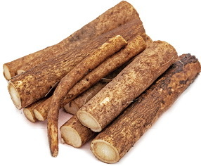
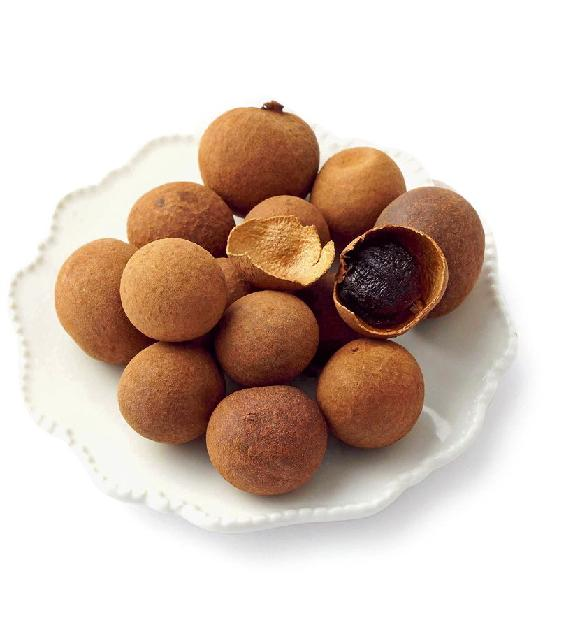
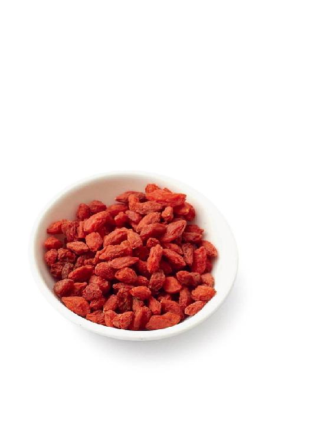
松针可以预防流感、支气管炎，调理风湿关节痛、失眠、神经衰弱等慢性病。
甘草有双重功效：补益和解毒。它健脾、补心、益气，又能润肺止咳，还能调理热毒引起的皮肤问题，无论是饮用还是外敷都能增强皮肤的自愈能力。
【原料】
新鲜松针500克、甘草20克。
【做法】
【功效】
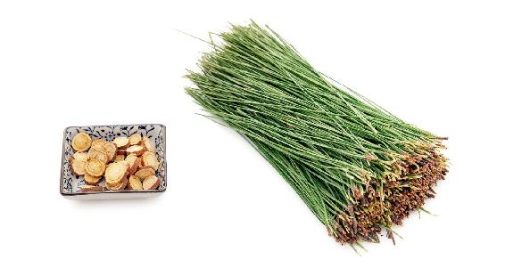
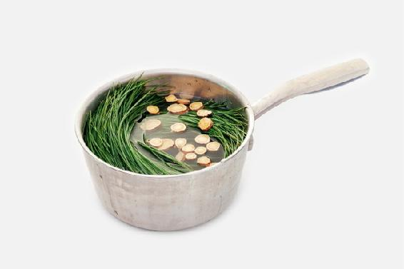
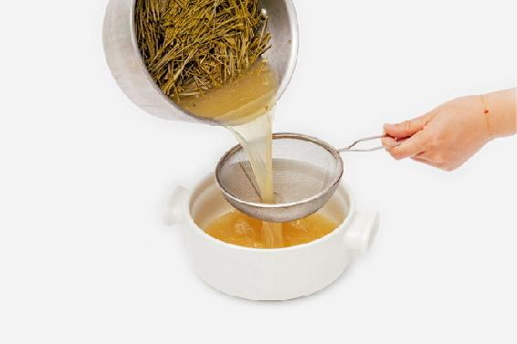
允斌叮嘱
煮过的松针依然清香扑鼻，晾干后用纱布袋装起来，放入米桶中，可以防虫。
读者评论
松针和甘草煮出来的水非常地清香，家里的香味久久不散。全家人一起喝，竟然各有各的好处，我喝了觉得慢性支气管炎的老毛病舒服了很多，我女儿喝了痘痘消去了一大半，真的和老师的书名一样，茶包小偏方，喝出大健康。
——海燕
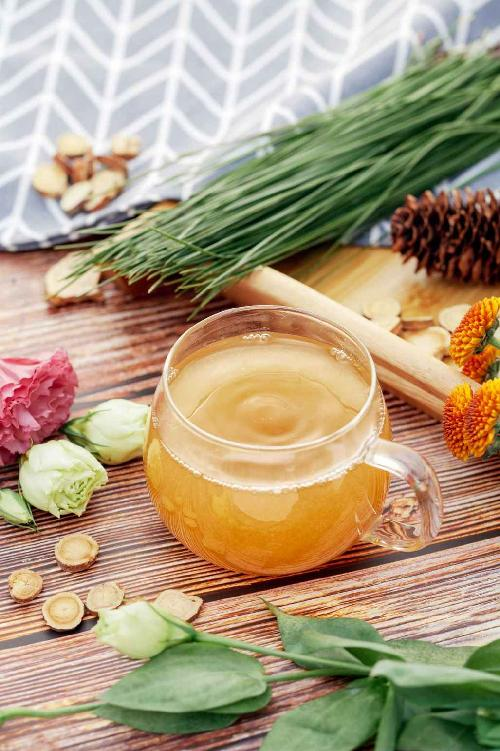
牛蒡是保健作用很强的蔬菜，适合全家人每天食用。
牛蒡消肿解毒的功效强大，不仅能消除咽喉肿痛、痘痘等，科学家们对于它抗癌、抗肿瘤的作用也十分推崇。
【原料】
牛蒡1根。
【做法】
【功效】
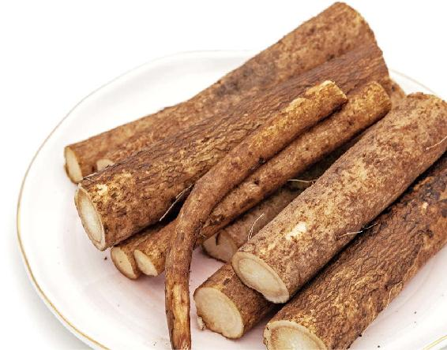
——Jutta
——丹
——小芳
——似水流年
——宝霞
——洁洁
——可儿
——杨平
——怡瑾
——暖
——小丽
——安和
——慧
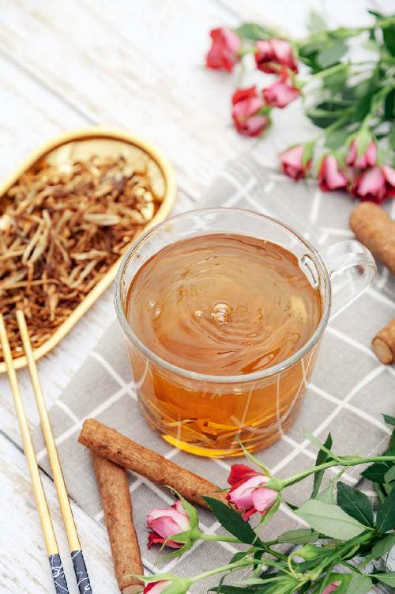
常吃枸杞子，可以使人精力充沛，还能预防腰酸腿软。
【原料】
炒好的牛蒡茶300克、120粒枸杞子。
【做法】
【功效】
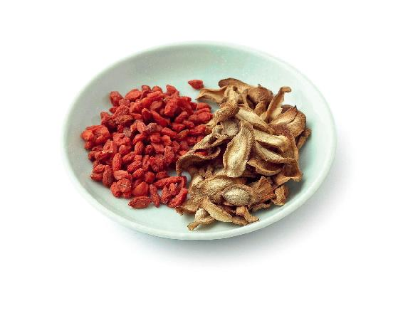
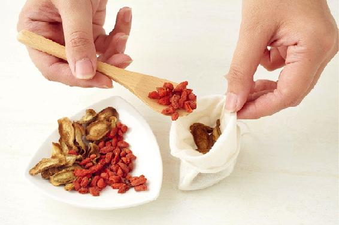
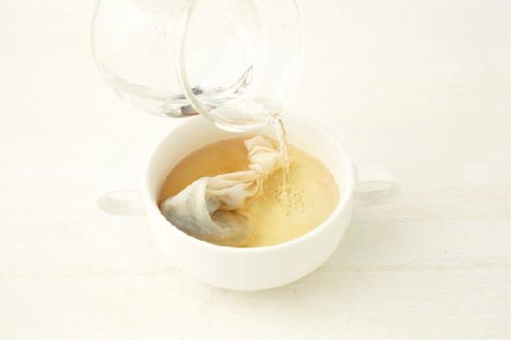
读者评论
——wL
——山鸡米
——茶白月色
——百合
——淘淘鱼
——锦衣卫
——Mahdⅰs小公主
——Mary
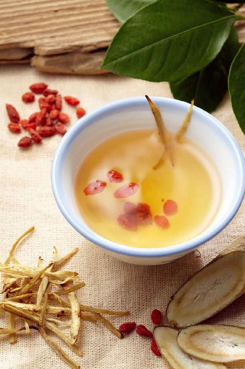
枸杞子也被称为“明目子”，它明目的功效是很突出的。眼睛发花、迎风流泪或是两眼干涩的人，吃枸杞子都有好处。
【原料】
枸杞子500克、干桂圆肉100克。
【做法】
【功效】
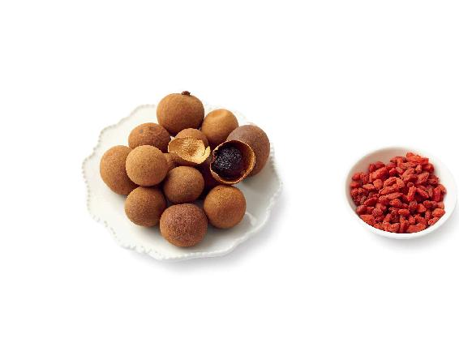
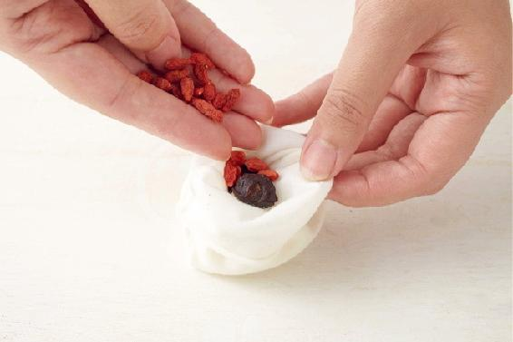
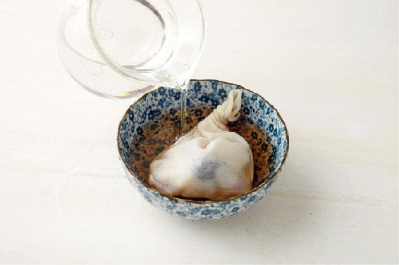
允斌叮嘱
枸杞子光是泡水作用不够，最好是泡水后吃掉。
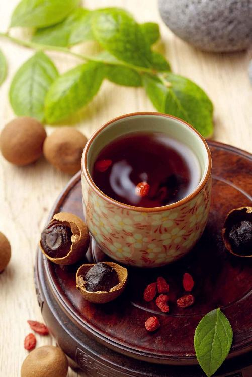
中国人的传统饮料，很多是由药方演变而来，体现了药食同源的中华特色。梅汤是其中的代表，传承千年不衰，可以说是“国民饮料”。
梅汤酸甜可口，是大众普遍喜爱的口味，而它的保健作用也同样对大众普遍适用，尤其适用于夏秋冬三季。
梅汤不仅特别适合日常养生，治起病来，有时比药还好使，常有令人意想不到的效果。
所以从古到今，从王公贵族到老百姓，日常都离不开这一碗保健品。庚子之乱，慈禧太后逃到陕西，仍然坚持每天喝梅汤，派人往太行山取冰制作。
【原料】
乌梅6个、川陈皮1/4到半个、大枣6个、山楂10克、甘草5克。
【做法】
沸水闷泡30分钟，有条件煮水更佳。
【功效】
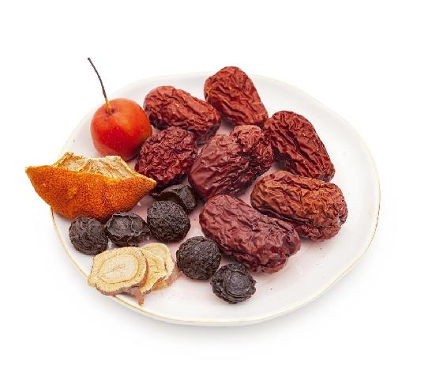
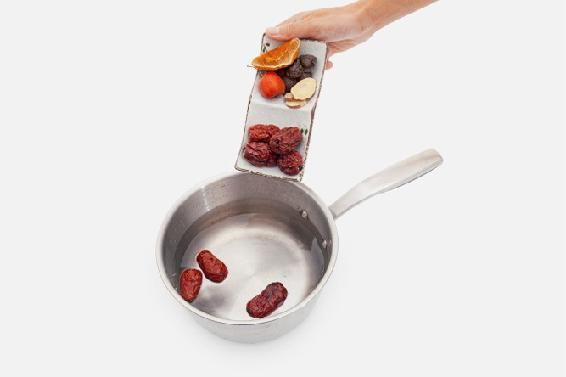
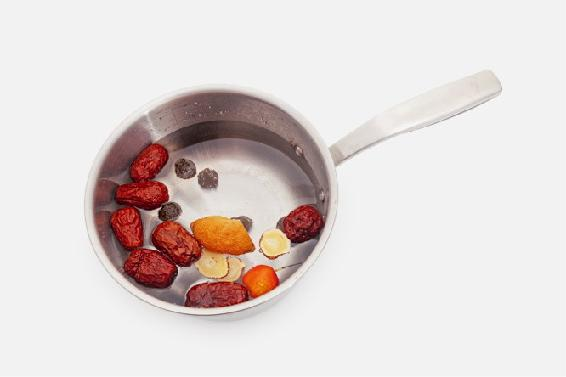
允斌叮嘱
——22群读者
——小邹
——小小淑
——2群晴天
——周周
——Rachel
——南冰韵
——冯宝霞
——莫说莫做
——玲
——徐小平
——涂涂
——刘燕
——海燕
——一只小呆龙
——雪天
——曹玲
——彩霞满天
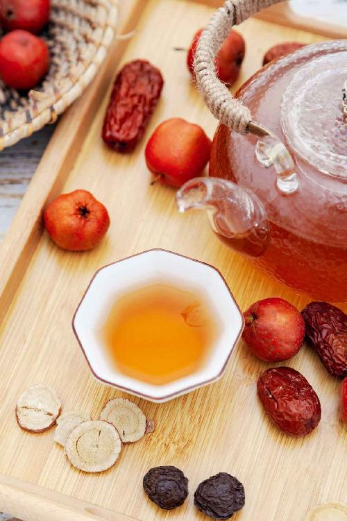